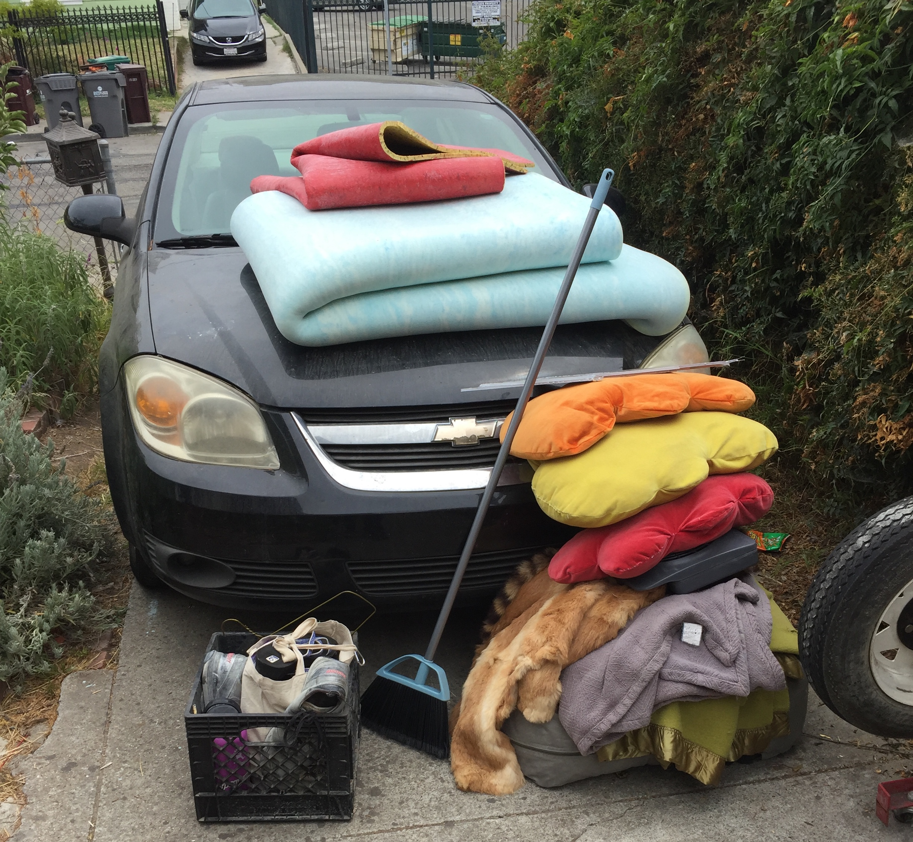

Re: Renting to your friends
Feb 3, 2023 - I originally wrote this as a reply to this article on Substack, but then it got too long, so I decided to just post it here! If you want context, go read Phil's article first. But I think this post also stands on it's own.
Hi there Phil and Bay Area community-minded housing advocates, 👋
Thanks for writing this article and starting an important conversation here in the Bay Area around what it means to be a good landlord. I've been a tenant in a friend's house that they owned (and know many others who've done same), and you're right - it's really hard! And while I don't think the rental price is the most important thing for that relationship to stay healthy, an unfair price will definitely chafe on the relationship over time.
And when relationships deteriorate, communities fall apart. So, if you're the landlord in this situation, my general advice is to focus on the relationships, not the returns!
(Caveat: this post refers to landlords in relatively comfortable financial positions or with large amounts of inherited wealth - I don't judge anyone in tough situations doing what they gotta do to get by!)
Markets
I'd like to start with a simple thought experiment: Let's say you came into a sweet deal on a used car, like only $500. It drives great. You think this car would be worth ~$2000 on the open market. A few months later, you decide you actually prefer biking, so you want to sell the car. And hey, turns out your friend really needs a car right now!
So here's the question: What price do you ask your friend to pay?
Sure, the open market dictates that it's worth $2000. But you know (and your friend knows) that you got it for $500. I hope we share the same intuition: sell it to them for for $500! Or maybe a bit more, but by golly don't ask your friend for $2000. That feels rude!
Why does that feel rude?
Well, for one, your friend will know that you're trying to profit off of them. You paid $500, but you want $2000 of their money, which, presumably, they had to work for. Yet you think you deserve $1500 of income where you did no work.
So if it's rude to ask your friend for $2000, is it rude to post the car on Craigslist for $2000? My intuition says: not really! Or at least, way less rude. Why? I think it's because:
The open market is where we go for transactions, where we assume we have no real relationships with the other parties, and where we assume everyone is greedy.
Personally, I'll even go one step further: In the open market, we assume it's ok to exploit people.
And good luck using those principles to build durable friendships and relationships!
Friendships are build on trust, common experience, and connection. They don't work at all like open market transactions.
And frankly, to confuse them is a mistake that will cost you your friendships. When people treat me like a competitor in the capitalist game, they aren't being my friend.
For the record, the first car I ever bought was for $500, and a year later we sold it to a friend for $300. It was also an absolute pile of trash. 😅
Our dear friend Coby. Anybody need a car for $2000?
Housing
So, how does this apply to housing? You can probably guess where I'm going. Charging your friends the "market rate" for housing is just another way of saying, "the highest price I can get away with." You're just asking the market to be greedy for you, then turning it on your friend!
Instead, I'd advocate for cost-based pricing. What does it actually cost you to own and maintain the house? Get out a spreadsheet! You can estimate this stuff. Show them your work, show them the finances, and talk it through together. If you want, you can even include an estimate of your hours of manual labor (at a reasonable hourly rate). Then just charge your friend their fair share based on the amount of space they need. (Splitwise rent calculator, anyone?)
If you own the house outright, then you're done! Congratuations: You are being an awesome human being. You are charging your friends a fair price for something, based on what it costs. You are not extracting additional money from your friends because you happen to control a scarce resource. Yay!
Mortgages
But what if you have a mortgage? Well, that's definitely more complicated! But let's start from this fundamental fact:
Every dollar a renter pays above the cost of upkeep is a dollar for which they are paying your mortgage, yet you keep 100% of the equity.
Our fancy banks and lawyers might tell us that this is totally normal and fair, but ask yourself if you really think it is. I sure don't.
I think the fair thing to do is to give renters some form of equity. Even if 80% of their rent goes towards upkeep, and only 20% goes towards the mortgage, take that 20% and consider it an investment they've made into your home.
If you just take that 20% and use it to pay down your mortgage, you're taking their money just because you can, without giving anything back. In my book, that's no way to treat a friend. Actually, in my book, that's no way to treat anyone.
Structures for shared home ownership can vary, from LLCs to TICs to Coops to flexible "loans" and payout agreements. Maybe you write up a simple agreement that they "own 2% of the house," but all that really means is that if you sell the house, you commit to give them 2% of the sale price. Maybe you form a little cooperative that actually owns the house, and you all put money into the coop. Or maybe a flat $200 of their monthly rent gets tracked as their "investment" into the property, which accrues some interest (or is tracked to a local real estate value index). You could reserve the right to buy them out whenever you want, or just wait to pay them back if the house sells. Maybe future tenants pay a little bit to buy them out over time. There's so many options!
Even if you're still the landlord with all the decision-making power and legal rights of ownership, there are lots ways to give something of value back to your friends for the contributions they're making towards the mortgage. (That said, relationships also suffer under power imbalances, so think about how you'll own up to the fact that you have all the legal rights in this situation. Alternatively, you could make it a real 1 person/1 vote coop. But that's a topic for another day!)
Special Bay Area bonus!
If you live in the Bay, you're lucky enough to have access to the Sustainable Economies Law Center (SELC), one of the nation's leading next-economy law practices. They literally specialize in stuff like this, and you can go chat them up for at their free "legal cafe" in Berkeley!
Closing
But here's the real kicker: If you're friends, and you plan to continue investing in that relationship over time, you don't have to do a ton of crazy paperwork. Just write up a clear and simple agreement with clear expectations, find a witness (or 3), sign it, and honor it! Now your only job is to continue building trust so it never gets so bad that someone decides to sue. 😝
The thing that's so challenging/insidious about all this is that we've inherited all of these extractive ways of thinking, and we aren't taught about any alternatives! Landlords trying to rent to their friends may truly be coming from the right place, but if their only tools are baseline extractive, they'll see their community of tenants churn year after year and wonder why.
- Kyle